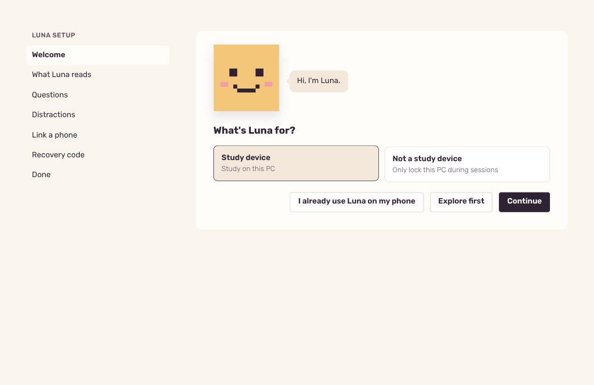
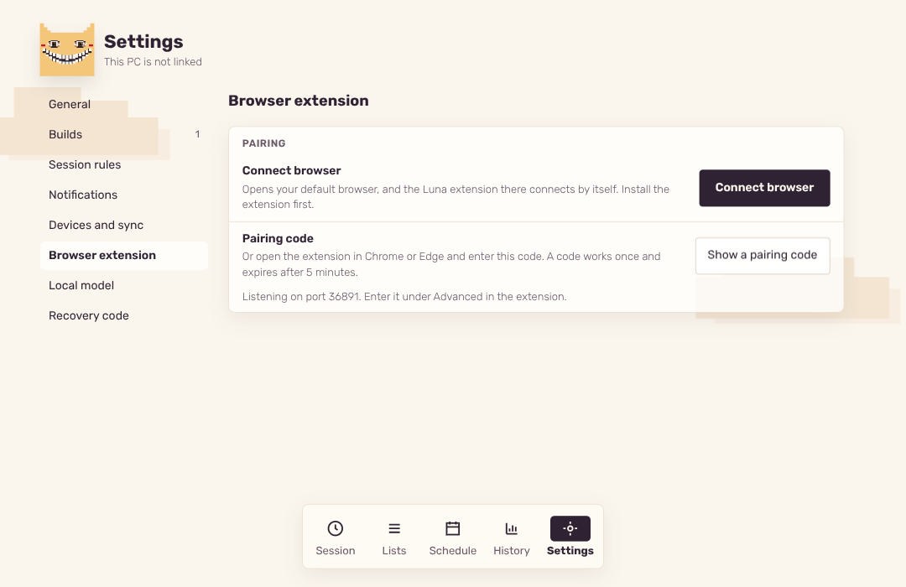
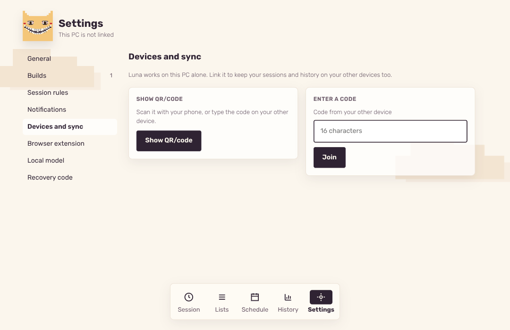

1. Your PC
Windows 10 or later. The PC app runs your sessions and blocks programs.
- Download Luna for Windows and open the file.
- If Windows shows Windows protected your PC, choose More info, then Run anyway. The installer isn't signed yet, so Windows doesn't recognise it.
- Luna opens its intro: a few questions, your first lists, and a recovery code if you pick a strict level. Keep that code somewhere safe.
- Luna then lives in the tray by the clock. Click the pet to open it.

2. Your browser
Chrome, Edge or Brave. The extension blocks sites and needs the PC app.
- Download Luna-Extension.zip and extract it to a folder you will keep.
- Open chrome://extensions (or edge://extensions / brave://extensions), turn on Developer mode, click Load unpacked, and choose the extracted folder.
- In Luna on your PC, open Settings › Browser extension and press Connect browser. Your browser opens a tab, and Luna connects by itself.
- Using another browser than your default? Open the extension's popup there and type the 6-digit code Luna shows instead.
Important settings: Keep the extracted folder in place while testing, and open the extension's Details to turn on Allow in Incognito (Chrome/Brave) or Allow in InPrivate (Edge) so private windows are covered too.

3. Your phone
Android 7.0 or later. Luna isn't on Google Play yet, so you install it from a file.
- On your phone, download the Android app, or scan the QR code on the download page.
- Open the file. When Android asks, allow your browser to install unknown apps (and tap Install anyway if Play Protect warns on a new beta APK), then tap Install.
- Open Luna and complete the 6-step Phone setup. Each screen explains what the permission reads, does, and keeps before opening Android Settings.
If Google Play Protect blocks the install: Sometimes Play Protect blocks a new beta APK without showing Install anyway. Open the Play Store, tap your profile icon (top right) › Play Protect › Settings (gear icon), and temporarily turn off Scan apps with Play Protect. Install Luna, then turn Play Protect right back on.
The 6 phone setup steps
Android 13–15 Restricted setting: Accessibility (Guard) and Notification access may show Restricted setting. Open App info for Luna, tap ⋮ › Allow restricted settings, then return to Luna and turn them on.
4. Link them
Linked devices share your lists, and one session locks them all.
- On your PC, open Settings › Devices and sync and press Show QR/code. A QR code appears.
- On your phone, open Settings › Link devices, tap Scan QR code and point it at the PC screen.
- No camera? Tap Enter a code and type the code shown under the QR.

Updating and removing
Updating: Windows downloads updates in the background and offers Restart to update from the tray. Android shows a new-version notice on Start linking to the latest APK. Your lists, sessions and history stay.
Removing: end any running session first; Luna stops itself being removed during one. On the phone, turn off Device admin for Luna in Settings before uninstalling.